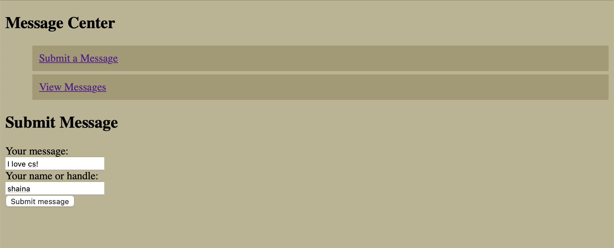
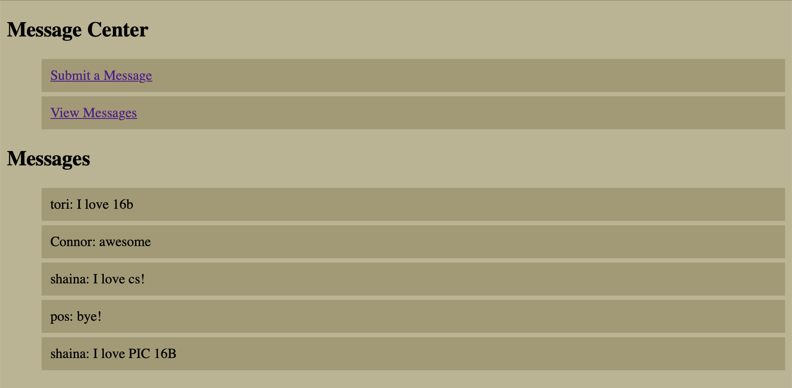

In this blog, you will be learning how to create a website using flask! The goal is to create a website that contains hyperlinks that will open a text box to allow users to put in a message as well as their name or handle. All of the information will be sorted into a database. There will also be a link to look at all the past messages.
Important Folders to Create
First, let us create the folders needed for our website. Create a folder called Flask_Web_Design. This will store all the code and files we will need in order to create our website. We will first create a py file called app. This will have the flask code for our website. Inside the folder, create another folder called templates. Templates will store all of our html files, which is what will creating what is displayed on the website. We are going to create 3 different html files: base, submit, and view. Create another folder called static. Inside, create a css file called style. This allows you to customzie your website and add different fonts, text size, and colors. Now, we are ready to get started!
app.py
Let’s begin by adding code into our app.py file. We will create a total of 5 functions: get_message_db(), insert_message(request), random_messages(n), submit(), and view(). We will first import the necessary libraries.
from flask import Flask, g, render_template, requestimport sqlite3app = Flask(__name__) # creating the name for our website@app.route('/')def main():"""Creating the base of our website/the home page"""return render_template('base.html')
IndentationError: expected an indented block after function definition on line 7 (2588756415.py, line 8)
get_message_db()
The purpose of get_message_db() is to connect or create a database that will store all the messages that is being submitted in our website. To do so, we will create a try and except case. If a database exists, the function will connect to the existing one. In the case that it does not exist, we will create a database.
@app.route('/message') # directory to the message pagedef get_message_db():"""Creating the database if one does not exist If a database does exist, we will get the current one"""try:return g.message_dbexceptAttributeError:# connecting to our database g.message_db = sqlite3.connect("messages_db.sqlite") cursor = g.message_db.cursor()# if table does not exist, create one cursor.execute('''CREATE TABLE IF NOT EXISTS messages (id INTEGER PRIMARY KEY, handle TEXT, message TEXT)''') g.message_db.commit()return g.message_db
IndentationError: expected an indented block after function definition on line 2 (926931727.py, line 3)
insert_message(request):
The purpose of this function is to take in the user inputs from the website. We are asking users for to submit a message as well as their name/handle. We will then get our database through calling the get_message_db() function and inserting what the user submitted to the site. We also have to make sure we close the connection to our database.
def insert_message(request):"""Inputting the user's submissions into the database""" handle = request.form['handle'] message = request.form['message'] con = get_message_db() cur = con.cursor() cur.execute('''INSERT INTO messages (handle, message) VALUES (?, ?)''', (handle, message)) con.commit() # commit the messages con.close() # CLOSE THE CONNECTION!
submit()
The purpose of this function is to ensure the html files are connected to the functions that we have defined. Above our function, we have included an @app.route(), which creates the add on to our base link. We have two different methods of accessing the site, one through POST and one through GET. The GET when the user tries to get to the submit page by clicking on the hyperlink in the base website. If the user is trying to post, we will use the insert_message() function and then thank the user for their submission.
# Creating a route to the submit page@app.route('/submit', methods=['POST', 'GET'])def submit():"""Calling the submit.html base on what the user doesWill either open up the submit page or get the informationfrom the user's submission"""if request.method =='GET':return render_template("submit.html")else:# calling insert_message() to input submission to database insert_message(request) # thank you note to user thanks ="Thank you for your submission!"return render_template("submit.html", thanks = thanks)
random_messages(n)
The purpose of this function is to get the messages and names of the users that have posted on our site. To do so, we will need to establish a connection to our database. Once the connection has been made, we will get all of the messages and handles.
def random_messages(n):"""Connecting to our database and getting the handle and messagesfrom each user"""# connect to database con = get_message_db() cur = con.cursor()# extracting information cur.execute('''SELECT handle, message FROM messages ORDER BY RANDOM() LIMIT ?''', (n,)) messages = cur.fetchall()# close our connection cur.close()return messages
view()
The purpose of the view() function is to create a route form the base website that shows the different messages that have been submitted by previous users. To do so, we will all the random_messages(n) function to get the information we need. In this case, I have made it so that n equals 5. Therefore, we will be getting 5 random messages from our database. Then we will set a connection to the view.html to upload the messages we have extracted.
# creating a new route from base website@app.route('/view')def view():"""Getting 5 random messages from database and uploadingit to the view.html""" messages = random_messages(5)return render_template("view.html", messages=messages)if__name__=='__main__': app.run(debug=True)
That is all for the app.py files! The next section will be talking about the html files in our templates folder.
submit.html
In our templates folder, we have create a file called submit.html. (In this blog post, I will only be showing the submit.html code. However, you can find the rest of the code on my github: https://github.com/swang029/flask_app.git). The purpose of this file is to create the text boxes for the user to submit their messages as well as their name/handle. Below, I have included comments on what each line of code does in this file.
# establishes a connection to the base.html file{% extends 'base.html'%}# creates a block for the header of this route{% block header %}# put in what we would like the header to be# in this case, it is "Submit Message"<h1>{% block title %}Submit Message{% endblock %}</h1># we will then end the block for the header{% endblock %}# next, we create a new block for the content{% block content %}# the method of the form is a post<form method="post"># we add a title above our text box<label for="message">Your message:</label><br># this line will allow users to input their message<inputtype="text" name="message"id="message"><br># we add a title above our next text box<label for="handle">Your name or handle:</label><br># this line allows users to input their name/handle<inputtype="text" name="handle"id="handle"><br># then create a submit message button<inputtype="submit" value="Submit message"># this line shows that we are done with our form</form># we will then end the block for our contnet{% endblock %}
Demo
 Below, I will show you what the completed website looks like! This is an example of a user putting in a message and their name into the submission form.
 After the user has submitted the form, if they click on the link to “View Messages”, they will be able to see 5 random messages that have been submitted before.
Final Takeaways:
That is all on how to create a website using flask. To find the completed code, please visit my GitHub: https://github.com/swang029/flask_app.git!